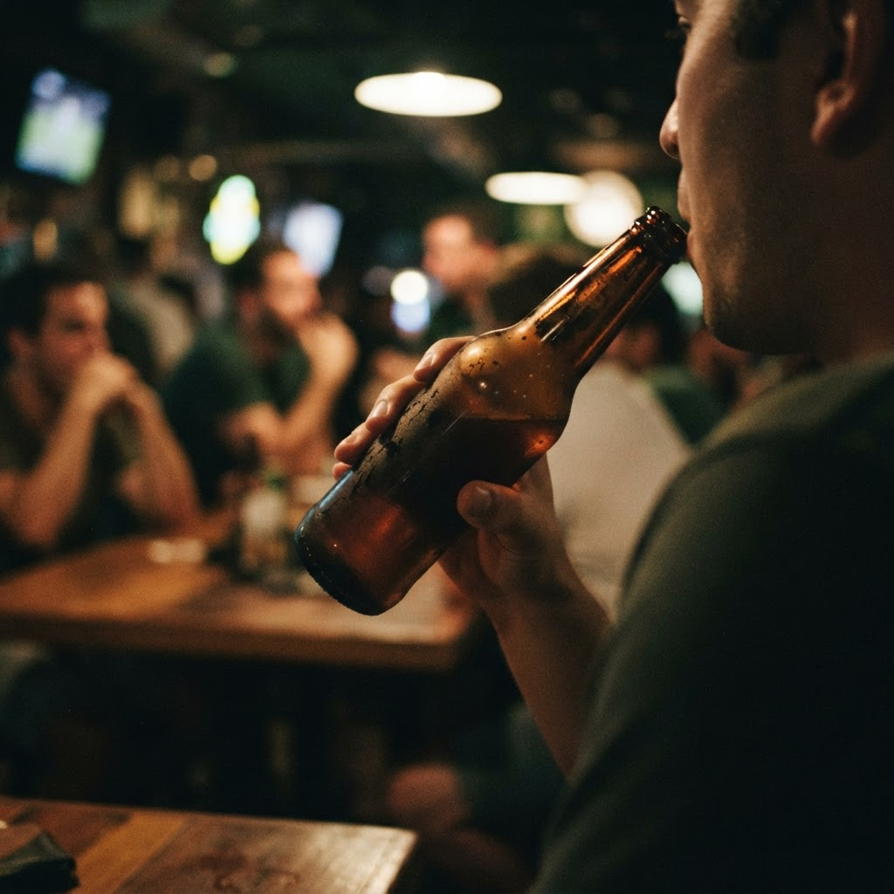

Ветров и партнёры — Колтуши
Доставка алкоголя по Петербургу круглосуточно
Привозим вино, крепкий алкоголь, пиво и закуски по всем районам Санкт-Петербурга и в ближние пригороды: Мурино, Кудрово, Всеволожск, Шушары. Курьер приезжает за 40-60 минут, днём и ночью. Только для покупателей старше 18 лет, возраст проверяем при передаче заказа.
О нас
Небольшая петербургская служба доставки: свой склад на юге города, двенадцать курьеров на автомобилях и собственная диспетчерская. За месяц отвозим около четырёх тысяч заказов. Ассортимент более 1500 позиций: от российских вин до выдержанных коньяков и виски.
Частые вопросы
Доставляете ли ночью?
Да, работаем круглосуточно без выходных, ночью время доставки по городу 50-70 минут.
Можно ли заказать в пригород?
Да, возим в Мурино, Кудрово, Всеволожск, Шушары, Парголово и другие ближние пригороды, стоимость называем при заказе.
Контакты и время приёма
Принимаем заказы круглосуточно по телефону, в мессенджерах и через телеграм-бота. Склад и диспетчерская в Санкт-Петербурге, доставка по всем районам города и ближним пригородам.
Заказать доставку
Оформите заказ сейчас: привезём за 40-60 минут в любой район Петербурга, круглосуточно.
Призыв5 статей
Все статьи
 Коньяк доставкой спб с доставкой в Красносельском районеКолтуши стремительно растут, превращаясь из пригорода в полноценную часть агломерации. В ночное время поиск качественного алкоголя становится задачей со звез…
Коньяк доставкой спб с доставкой в Красносельском районеКолтуши стремительно растут, превращаясь из пригорода в полноценную часть агломерации. В ночное время поиск качественного алкоголя становится задачей со звез… Доставка алкоголя спб с доставкой в Приморском районеЖители Колтушей часто сталкиваются с логистическими сложностями при заказе товаров после полуночи. Однако круглосуточная доставка алкоголя СПб с доставкой в …
Доставка алкоголя спб с доставкой в Приморском районеЖители Колтушей часто сталкиваются с логистическими сложностями при заказе товаров после полуночи. Однако круглосуточная доставка алкоголя СПб с доставкой в … Перевозка пива с 1 сентября с доставкой в Красносельском районеКолтуши активно развиваются, но доступность ночных услуг остается острым вопросом для местных жителей. Перевозка пива с 1 сентября с доставкой в Красносельск…Может ли ип перевозить алкоголь с доставкой в Красносельском районеКолтуши активно развиваются, и спрос на быстрый сервис здесь только растет. Местные жители часто интересуются, реально ли получить любимые напитки домой всег…
Перевозка пива с 1 сентября с доставкой в Красносельском районеКолтуши активно развиваются, но доступность ночных услуг остается острым вопросом для местных жителей. Перевозка пива с 1 сентября с доставкой в Красносельск…Может ли ип перевозить алкоголь с доставкой в Красносельском районеКолтуши активно развиваются, и спрос на быстрый сервис здесь только растет. Местные жители часто интересуются, реально ли получить любимые напитки домой всег…
Может ли ип перевозить пиво с доставкой в Красносельском районеКолтуши активно застраиваются, поэтому спрос на быструю доставку напитков здесь растет ежедневно. Местные жители часто сталкиваются с нехваткой сервисов, гот…